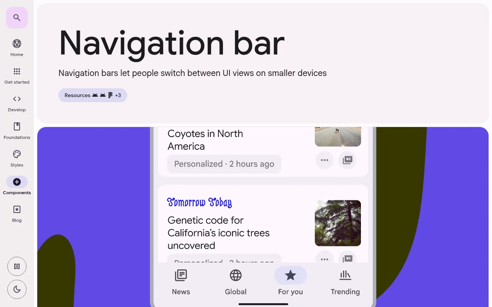

Anthropic 正在推送改版后的 Claude 安卓应用。产品经理 Robert Bye 11 月 23 日在 X 上宣布：“我们全面采用了 Material 3 Expressive，让一切尽可能像原生应用。” 9to5Google 的 Ben Schoon 当天体验了新版，他看到的是：底部导航栏取代了过去对汉堡菜单的依赖（菜单还在，但现在主要放聊天记录）；模型切换器和聊天背景用上了 Material 3 元素；配色仍是 Anthropic 自己的，没有跟随手机壁纸取色。三天前 Bye 刚发布了在 iOS 和安卓上都带标签栏的新版移动应用，所以这次是在共用结构之上专为安卓加的一层。
值得单独写一篇的是外界的反应。Matthew McCullough 代表安卓开发者团队向 Anthropic 致谢时总结说：“原生的导航……Material 3 Expressive 的动效，而且依然很有 Claude 的感觉。”最后半句正是每个 AI 产品团队眼下的设计难题。聊天应用的外壳几乎一样：输入框、历史列表、模型选择、设置。它们真正的差别在对话本身，不在外壳。所以外壳完全可以按平台的方式运作，品牌则放到更有用的地方去。

多年来很多 AI 应用只做一套跨平台设计，到处都是汉堡菜单和自定义配色。这样做省事，却把产品的结构藏了起来。Nielsen Norman Group 对隐藏式导航的定量研究发现，把主导航藏起来会让可发现性下降将近一半，并建议在手机上直接展示不超过四个的一级链接。底部导航栏就是移动端的答案，而 Material 3 Expressive 连动效和状态都已经调好了。
我们会照搬的分工很简单。凡是用户的手和习惯已经熟悉的东西，都交给平台：导航放哪里、返回怎么走、面板怎么弹出、弹簧动效有多快。凡是让产品被认出来的东西，都留给品牌：配色、字体、插画、文案语气，以及一两个高光时刻。Google 自己的 Expressive 指南对最后一点也是这么说的：高光时刻只留一两个，多了就会分散注意力。对 AI 应用来说，最自然的候选是回复开始流式输出的那一刻。
有两点要注意。第一，“原生”是一份承诺，不是一种风格。外观看起来像平台，用户就会期待它的行为也像平台；返回手势不预览、面板压住手势区域，在原生外观的应用里会比在明显自定义的应用里更显得坏掉了。第二，按平台原生意味着 iOS 要有自己的答案。Bye 的第一条公告里两个系统都有标签栏；在 iOS 上应参照 Apple 的标签栏规范，而不是把安卓的底栏直接搬过去。

# 贴给正在做安卓界面的编程智能体（Jetpack Compose）
用 Material 3 Expressive 组件构建 <界面>。
导航：底部导航栏，入口为以下 3–5 个：<列表>。
历史记录、文件等长列表放进抽屉或搜索，不要放进导航栏。
返回：开启预测性返回；自定义全屏转场缩放到 90%，
在手势进度 35% 处淡入淡出；中途松手要恢复原状态。
颜色：把我们的品牌色映射到颜色角色（primary、secondary、tertiary、
surface container）。动态取色：<关闭 | 协调自定义颜色>。
字体：通过 Material 字号阶梯角色使用我们的字体。
动效：只用 Expressive 弹簧 token；唯一的高光时刻：<描述>。
遵守全面屏手势区域。交付亮色和暗色截图，
并列出所有不得不手写的组件。UI Hub 相关阅读：交接基于物理的弹簧动效、带降级方案的手势交互，以及为平台自适应暗色模式做设计。